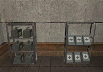
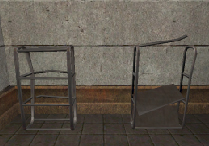

© 2003 Splash Damage, Ltd. All Rights Reserved.

| Wolfenstein: Enemy Territory Documentation © 2003 Splash Damage, Ltd. All Rights Reserved. |
|
The health and ammo cabinets have two model states: broken and operational. They could be turned into a construction item if necessary because all states exist (empty, built and damaged). The cabinets do not rely on scripting because most of their functionality is provided via the code.
|  | Functional model Entities: misc_cabinet_supply, misc_cabinet_health The above entities will create the correct models in game with all the ammo and health boxes attached. The empty stands exist as models as follows: Folder: models/mapobjects/supplystands/ Models: stand_health.md3, stand_ammo.md3 |
|  | Broken model The broken health and ammo cabinets are created in game with a misc_gamemodel, using a model key pointing at the md3. A targetname key will also allow the models to be added or removed from the game. Folder: models/mapobjects/supplystands/ Models: stand_health.md3, stand_ammo.md3 |
Entity Requirements
The ammo cabinet is defined by a point entity
called
misc_cabinet_supply
. This entity will generate the correct game model for the ammo boxes to be
stored on. The game will automatically keep re-stocking the ammo over time.
The ammo cabinet is surrounded by a common/trigger brush entity called trigger_ammo. This entity is the area in which the player has to stand in order to receive ammo. The rate and total amount of ammo the cabinet will give out is defined by the ammototal and ammorate keys. This entity is targeted at the misc_cabinet_supply entity.
The health cabinet is defined by a point entity called misc_cabinet_health . This entity will generate the correct game model for the health boxes to be stored on. The game will automatically keep re-stocking the health over time.
The health cabinet is surrounded by a common/trigger brush entity called trigger_heal. This entity is the area in which the player has to stand in order to receive health. The rate and total amount of health the cabinet will give out is defined by the healtotal and healrate keys. This entity is targeted at the misc_cabinet_health entity.
In order for the health and ammo cabinet to appear on the map a trigger_objective_info entity is required. When the player is near the trigger_objective_info entity a message is displayed on screen. Whatever is defined in the track key is used as the onscreen text message.
Important note: The trigger_objective_info is a brushwork entity and must contain an origin brush; otherwise it will appear half way between its current map position and "0 0 0" map position on the command map.
The trigger_objective_info entity is targeted at a misc_commandmap_marker entity. This entity allows the trigger_objective_info entity to appear on the command map. The trigger_objective_info needs to have the correct spawnflag set 'is_healthammocabinet' so that the correct icon is displayed on the command map.
For each cabinet a rough set of clip brushes will need to be created to mirror the shape of the model. Once all the clip brushes have been created an origin brush will need to be added and then everything converted into a script_mover entity.
Entity summary
1
misc_cabinet_supply
entity (Will create the correct game model as well)
1
trigger_ammo
brushwork entity (The trigger brush for
ammo)
1
misc_cabinet_health
entity (Will create the correct game model as well)
1
trigger_heal
brushwork entity (The trigger brush for
health)
1
trigger_objective_info
entity
1
misc_commandmap_marker
entity
2 clipbrush
script_mover
entities